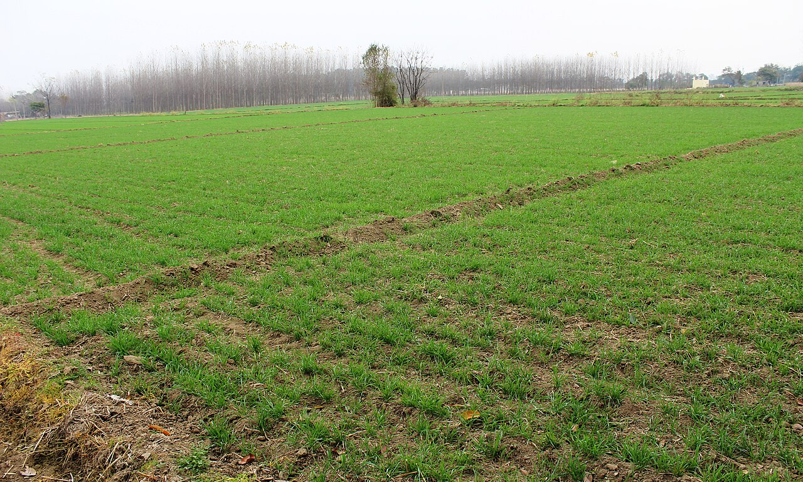

Straw is destroyed
Fire clears the field fast, but the straw is lost and the smoke harms health.

Solution pathway 01 / In-situ management
In-situ means “in place”. Instead of burning the straw or carting it away, it is managed inside the same field.
What in-situ means ↓The straw stays in the field.
The next crop is sown on time.
01What Does In-Situ Mean?
After the paddy harvest, the leftover straw is not burned and not taken away. It is either mixed into the soil or left on top as a cover, and wheat is sown in the same field.
Fire clears the field fast, but the straw is lost and the smoke harms health.
Straw is baled and carried away to be used elsewhere, for example as fuel.
About ex-situ →Straw goes back into the soil or covers it, and wheat is sown through it.
02The Two In-Situ Pathways
There are two ways to manage straw in the field. They can also be used together.
Machines that chop the straw, mix it into the soil, or sow wheat straight through it.
Explore CRM machinery → Pathway BA microbial spray that helps the straw break down in the field.
Explore biodecomposers →Sources: Government overview, 2026 ↗ · ICAR ↗